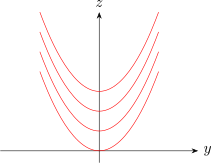
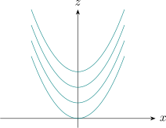
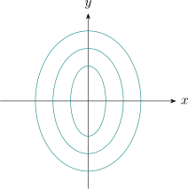
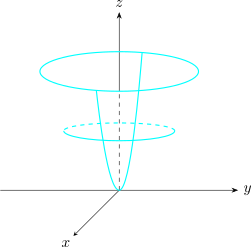
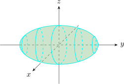
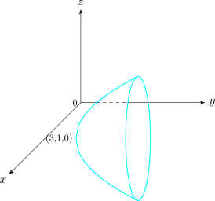

2 Surfaces
A surface in space is the two-dimensional analogue of a curve in the plane, and this short section develops the two ways of describing one.
The first is implicit: a surface as the set of points satisfying a single equation, as a sphere satisfies \(x^2+y^2+z^2 = a^2\). The second is parametric: a surface as the image of a map from a region of the plane, with two parameters playing the role that one plays along a curve. Each description makes different things easy, and moving between them is a recurring technical step.
Cylindrical and spherical coordinates are introduced here rather than later because the surfaces that suit them — cylinders, cones, spheres — are exactly the ones whose equations become simple in them, and that simplicity is what makes the triple integrals of the next section tractable.
Tangent planes are treated for both descriptions. The tangent plane is the linear approximation of the previous section made geometric, and its normal direction is the gradient.
Recall \[Ax^2 + Bxy + Cy^2 + Dx + Ey + F = 0\] In three dimensions, the graph of a second degree equation in \(x,y,z\)
\[Ax^2 + By^2 + Cz^2 + Exy + Fyz + Gxz + Hx + Iy + Jz + K =0\] is a quadric (or quadratic) surface (expect for degenerate cases).
We will consider the case where \(E = G = F =0\).
The trace of a surface is the intersection of that surface with the plane.
Use traces to sketch the graph of the function \(z = f(x,y) = 4x^2 + y^2\).
\[x = 0\hspace {0.5cm} z = y^2\]
\[ x = k\hspace {0.5cm} z = 4K^2 + y^2\]

any plane parallel \(yz\) intersects the surface is parabola.
\[y = 0 \hspace {0.5cm} z = 4x^2\] \[y=k \hspace {0.5cm} z = 4x^2 + K^2\]

\[z =0 \hspace {0.5cm} 0 = 4x^2 + y^2\] \[z =K \hspace {0.5cm} K = 4x^2 + y^2\]


Solution.
The traces in the \(yz\) plane
\[x =0 \hspace {1cm} \frac {y^2}{9} + \frac {z^2}{4} = 1\]
\[x =K\hspace {1cm} \frac {y^2}{9}+ \frac {z^2}{4} = 1 -K^2\] this is an ellipse \(K^2\leq 1\)
\[ y = 0\hspace {1cm} x^2 + \frac {z^2}{4} =1\] \[y = K\hspace {1cm} x^2 + \frac {z^2}{4} = 1-\frac {K^2}{9}\hspace {0.5cm} K^2\leq 9\]
\[z = 0\hspace {1cm} x^2 + \frac {y^2}{9} =1\] \[ z =k\hspace {1cm} x^2 + \frac {y^2}{9} = 1- \frac {K^2}{4}\hspace {0.5cm} K^2 \leq 4\]

Classify the quadratic equation \[x^2 + 2z^2 - 6x -y + 10 =0\]
\[ x^2 -6x + 9 + 2z^2 -y + 10 -9 =0\]
\[(x-3)^2 + 2z^2 -y + 1 =0\]
\[y-1 = (x-3)^2 + 2z^2\]
\[Y = X^2 + 2Z^2\]

Cone: \(\displaystyle {\frac {z^2}{c^2}=\frac {y^2}{a^2} + \frac {y^2}{b^2}}\)
Sketch the graph of
- 1.
- \(16x^2 - 9y^2 + 36z^2 = 144\)
- 2.
- \(y^2 + 4z^2 =x\)
Use traces of the functions and sketch the graphs.
2.2 Cylindrical and Spherical Coordinates
2.3 Tangent Planes
2.4 Parametric Surfaces
2.5 Tangent Planes To Parametric Surfaces
2.6 Tangent Planes To Level Curves
2.7 Practice Problems
Questions on this section
Stuck on something here? Ask below and it stays attached to this topic.